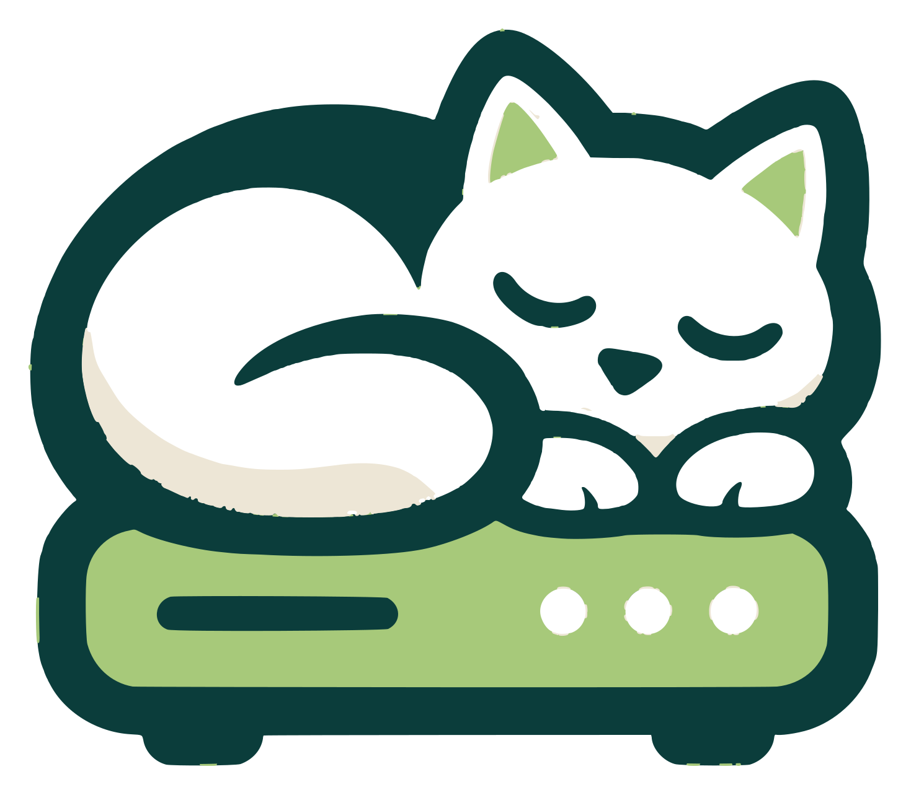
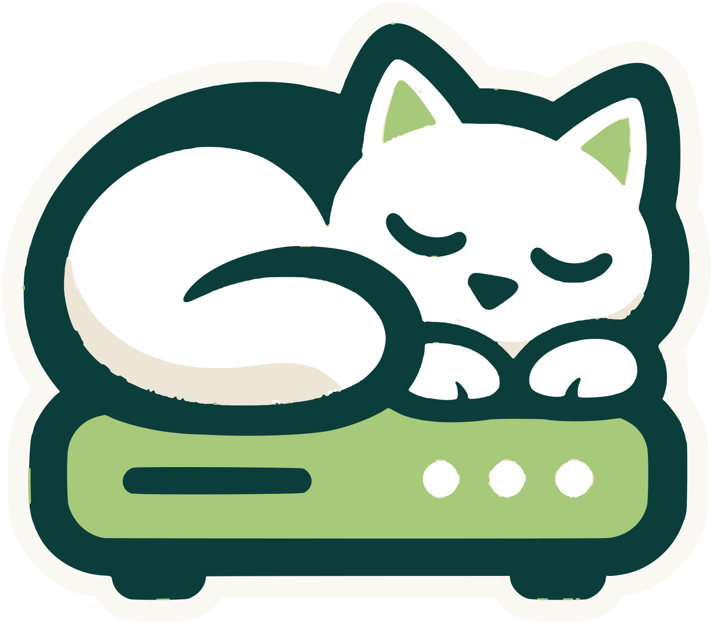
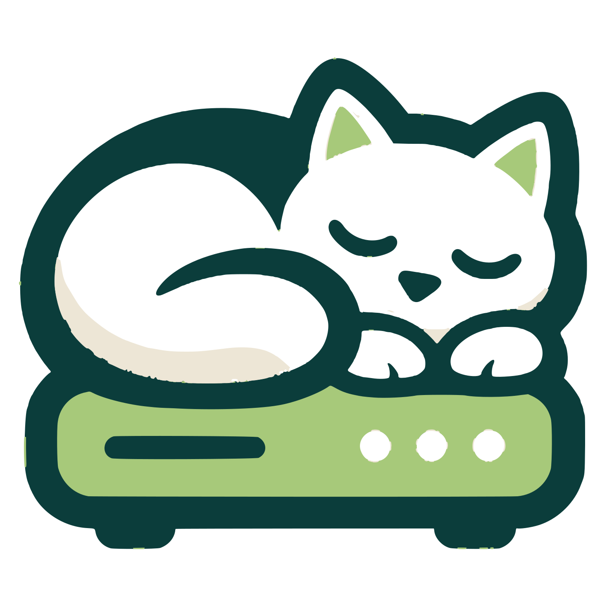
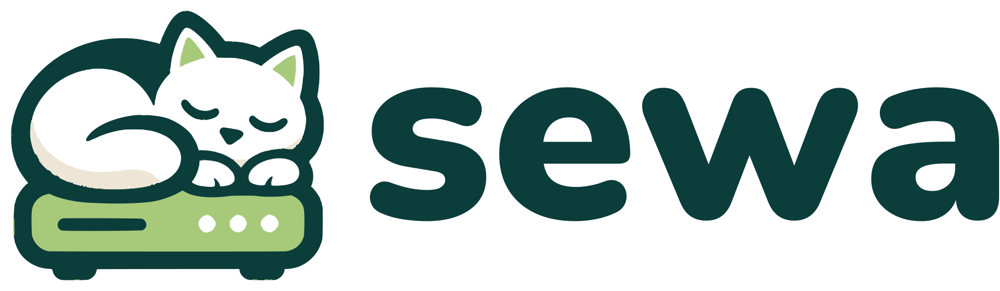
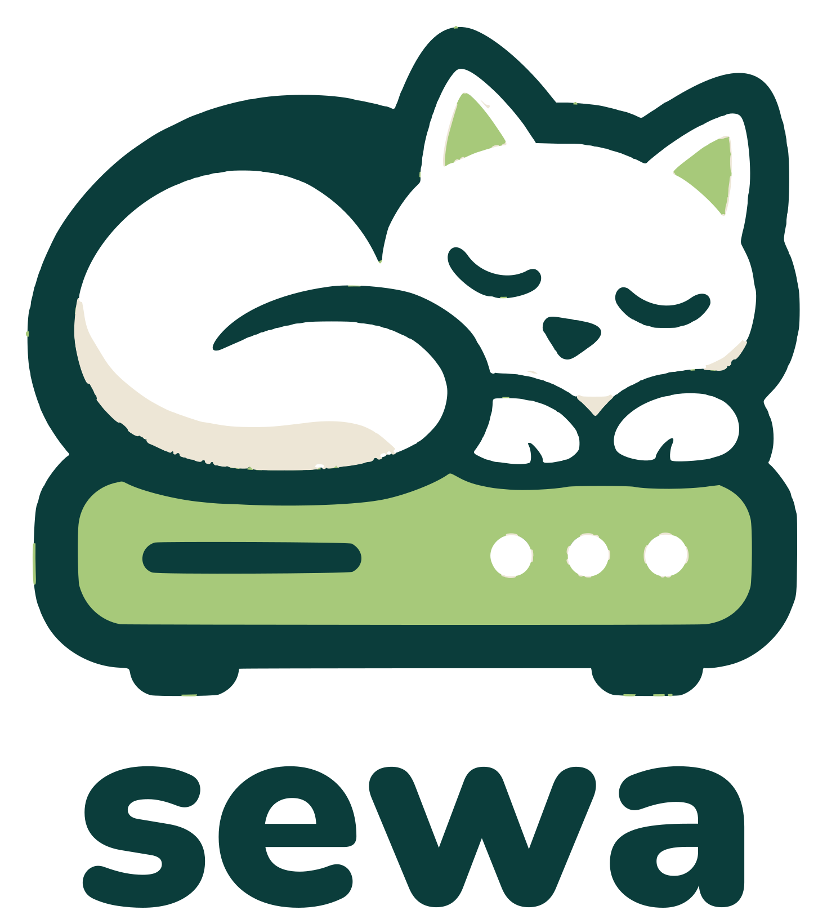
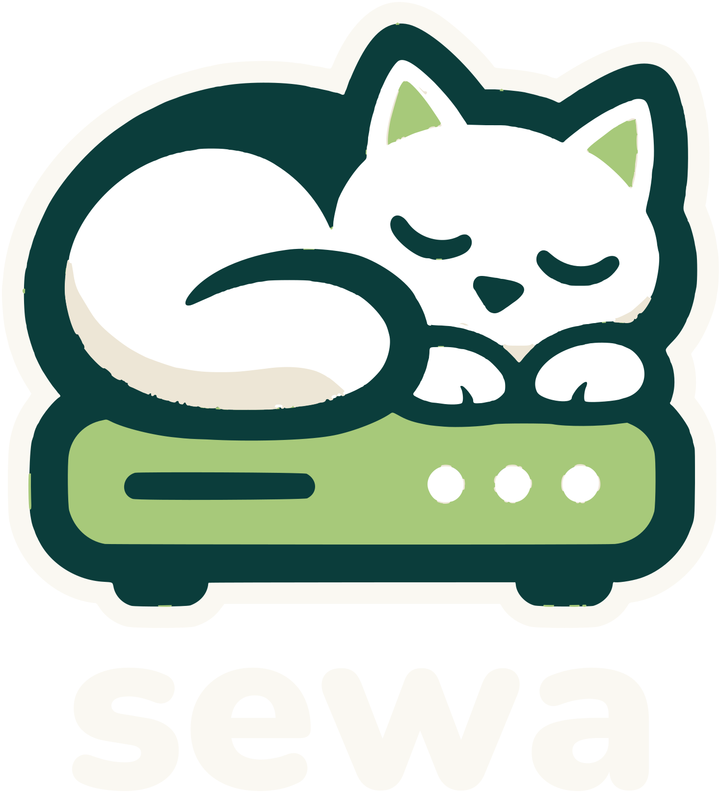

sewa brand usage
1. In the web app
The shell's brand shows the emblem 32 px high beside the name, in place of Kiso's BrandMark. The colors follow the app's theme.

sewa
sewa2. In the browser tab
The favicon is the emblem in a square viewBox. In a dark system theme it gets the ivory halo. It follows the system theme, not this page. Switch your system theme to see the other colors.

sewa sewa3. Colors
Ink, device, cat, and shade are the emblem's colors. Ivory is the halo on dark. Teal and mist support them. See README.md for each part.
#0B3D3B#FAF8F2#A7C97A#062826#2F8F7E#66B9A8#E7F3E3#EDE6D64. Every file on light and dark
Use the light file on a light background and -dark on a dark one; the wrong pairs are shown so the difference is clear. The -mono files and the wordmark use currentColor: through <img> they are black, so on dark a filter turns them ivory here. Inline the SVG to give them the CSS color.

lockup.svg: for light
lockup-dark.svg: ivory wordmark, not for light
lockup-stacked.svg: for light
lockup-stacked-dark.svg: ivory wordmark, not for light5. Minimum size
The emblem reads from 32 px high. At 16 px only its shape reads, so use it that small only as the favicon.
6. Rules
Do
- Use SVG, not PNG.
- Pick the file by the background.
- Keep the emblem's colors.
- Leave clear space around it.
Do not
- Change the wordmark's font.
- Stretch or rotate the emblem.
- Use the emblem below 32 px high, except as the favicon.
- Put the light file on a dark background.